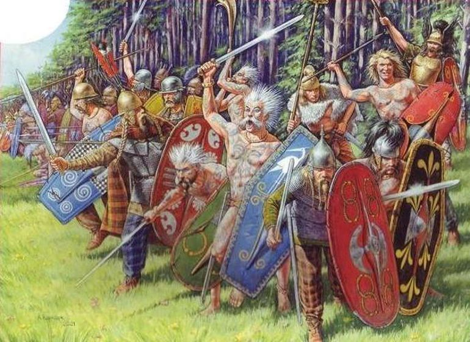

Julius Ceasar
Een van de bekenste romeinen is Julius Ceasar en in dit hoofdstuk zullen we zijn veldtochten behandelen.

Gallië
Één van zijn bekenste veldtochten is die van Gallië (huidig frankrijk).
Julius Ceasar trok met zijn leger naar Gallië om nieuw grond te veroveren.
Na vele jaren te hebben gevochten in Gallië kwam hij eindelijk aan bij de hoofdstad van zijn grote vijand:
Vercingetorix, de leider van de Galliërs.

Vercingetorix had zich gevestigd in de stad Alesie, en Julius Ceasar belegerde het al snel.
Vercingetorix vroeg echter hulp aan de omringende stammen, en een oud bondgenoot van Julius Ceasar kwam hun tehulp.
Hoewel Julius Ceasar het niet zag aankomen, wist hij de aanval van zijn oud bondgenoten af te slaan, en ging hij door met de belegering.
Na een tijdje gaf Vercingetorix op en liet zich gevangen nemen.
Hij werd naakt door de straten van Rome gedragen en Gallië was nu onder controle van Rome
Julius Ceasar had ook verzet tegengekomen in belgea, huidig belgië, en noemde hun ook moedige krijgers.
En hij was geland in Engeland, maar was al snel geforceerd terug te keren naar het vaste land.
Hoewel Rome nu de baas was in Gallië kwamen er nog steeds opstanden, maar die werden al snel door de romeinen opgelost
Conflicten
Na zijn overwinningen in Gallië marcheerde Julius Ceasar naar Rome.
De senaat had hem tot staatvijand benoemd,
maar vele romeinse steden vonden dat Julius Ceasar juist goed was
Nadat Julius Ceasar snel Rome had veroverd, omdat niemand het verdedigde,
Vluchtte de senaat naar griekeland.
Julius Ceasar onderschepte hun al snel en de burgeroorlog was vorobij
Julius Ceasar werd tot Dictator benoemd voor 10 jaar.
de Senaat was bang geworden dat Julius Ceasar alle macht naar zich toe zou trekken,
en dus vermoorde ze Julius Ceasar toen hij naar de senaat ging.
de moord op Julius Ceasar had vele gevolgen en leidde zelfs tot een burgeroorlog.